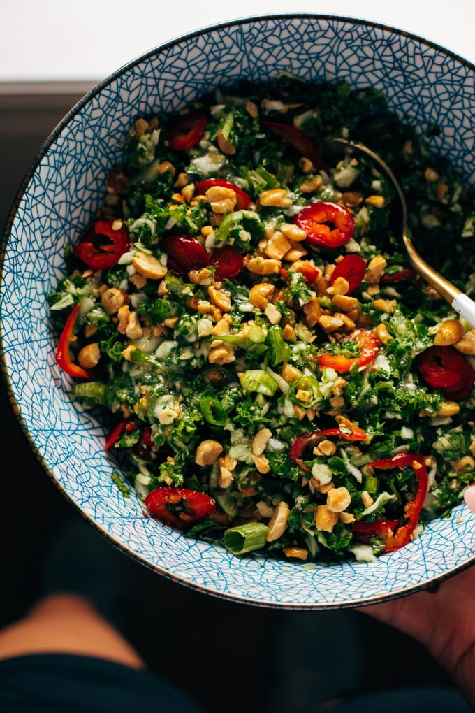

OOOH BABY, this salad is so good! Crunchy kale and cabbage, fresh herbs and fresno peppers, chopped peanuts,
and a perfect roasted peanut vinaigrette that tucks into all the salad nooks and crannies.
INGREDIENTS

This Roasted Peanut Kale Crunch Salad is SO yummy! I am very picky about kale in a salad, and this one is so pleasant to eat because of the finely chopped texture on the kale!
Plus it’s juiced up and slicked down in the best way possible with a light roasted peanut vinaigrette that is slightly sweet and just really delightful.
Kale Crunch Salad:
- 4 large stalks kale, stems removed
- half a head of green cabbage
- 2 small fresno peppers, sliced
- 1 cup peanuts, chopped
- 1/2 cup chopped cilantro
- 1/2 cup chopped green onions
Roasted Peanut Vinaigrette:
- 1/2 cup roasted peanut oil
- 2 tablespoons rice vinegar
- 1 clove garlic
- 2 1/2 tablespoons sugar/li>
- freshly ground black pepper
- 1 teaspoon coarse kosher salt (more to taste)
INSTRUCTIONS
- Make the Roasted Peanut Vinaigrette: Blend all ingredients in a small blender or food processor until smooth.
- Prep the Salad:Chop your herbs, peanuts, and fresno peppers.
- Chop the Kale and Cabbage:Using a food processor, pulse the kale and cabbage in batches until it is very finely chopped, stopping before the greens get too mushy.
- Mix and Serve:Toss your kale and cabbage with some of the dressing; massage it together with your hands for a minute to make sure the kale is tender! Add peanuts,
peppers, and the rest of the dressing. YUM!